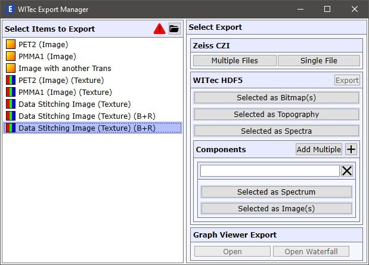

|
WITec导出管理器
|
WITec导出管理器可以加载WIP文件并将数据导出为多种格式。
您可以从Windows开始菜单或在WITec Project中（项目管理器上下文菜单）打开导出管理器。

选择要导出的项目
这里您可以选择应导出的项目。
打开WIP文件
打开WIP文件。您也可以将WIP文件从文件资源管理器拖放到此窗口。
如果加载的WIP文件中存在无法在此程序中使用的数据对象，则会显示红色警告。
将鼠标移到警告图标上可查看详细信息。
可以加载以下数据对象：
Zeiss CZI
多个文件 / 单个文件
将当前选择导出到Zeiss CZI格式。
可以在例如 Zeiss ZenBlue 软件中打开。
WITec HDF5 / .h5oiwt
有关WITec HDF5格式的详细信息，请打开文档：
C:\ProgramData\WITec\WITec Suite X.X\Common Files\Help\WITec Data Exchange Format h5oiwt.pdf
导出
将之前分配到WITec HDF5文件格式的对象导出。
选定为位图
将一个或多个选定的数据对象作为位图分配给导出。
选定为形貌
将一个选定的数据对象作为形貌图像分配给导出。
选定为光谱
将一个或多个选定的数据对象作为光谱分配给导出。
组件
添加多个
自动将多个选定的图像/图谱分配到不同的组件。
添加组件
添加一个新的空组件。
所有组件的图像和光谱必须具有相同的大小和空间/光谱位置。
组件组框
名称编辑
输入组件的名称。名称会自动设置为首个分配的数据对象。
选定为光谱
将一个选定的单光谱分配给此组件。
选定为图像
将一个或多个选定的图像分配给此组件。
移除组件
从组件列表中移除该组件及其所有分配的对象。
图谱查看器导出
打开
打开图谱查看器导出预览。
仅可用于一个或多个单光谱。
打开瀑布图
以瀑布图模式打开图谱查看器。
可用于多个单光谱或用于光谱线数据对象（例如时间序列）。
另请参见 光谱查看器导出。